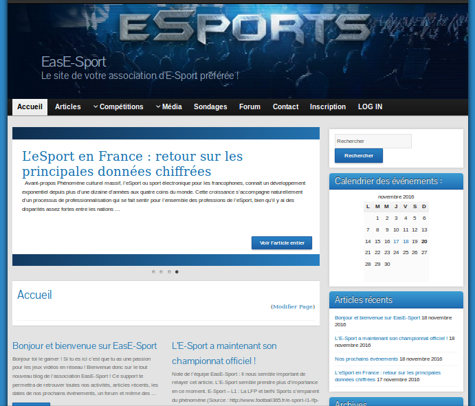

Introduction
Dans ce tutoriel, je vais vous présenter comment j’ai créé un Wordpress sur le sujet imposé suivant :
une association organisatrice de tournoi d’e-sport souhaite mettre en place un blog pour annoncer ses événements,
partager avec ses adhérents mais aussi créer un espace d’échange de jeux et consoles entre particuliers.
Contraintes imposées :
- une page d’accueil
- une page contact
- rédiger 3 articles pertinents
- intégrer au moins un plugin adapté aux besoins de l’activité pro
- sélectionner un template adapté à l’activité
- un formulaire
- un carrousel multimédia

1/ Trouver un nom
J’ai choisi le nom “EasE-Sport” pour mon wordpress, à la fois accrocheur et simple, il convient parfaitement à l’univers du E-Sport.
2/ Choisir un thème
Pour mon projet, j’ai choisi le thème “Graphene”
(https://fr.wordpress.org/themes/graphene/).
Il n’a pas un style vraiment particulier mais je recherchais justement un style simple, intuitif et pas trop chargé.
Il embarque donc une image d’en-tête (avec possibilité de rajouter le titre du blog),
une barre de menu, un slide avec les derniers articles et une zone latérale de widgets.
Pour l'installation, rien de plus simple : téléchargez le fichier zip contenant le thème désiré,
aller dans le dossier "wp-content" puis "themes" de votre fichier Wordpress et l'extraire ici.
Vous n'avez plus qu'à l'activer dans le panneau de configuration de Wordpress.
3/ Choix des plugins
Pour l'installation des plugins c'est sensiblement la même manipulation que
pour les thèmes sauf le dossier de destination qui est "wp-content" puis "plugins".
Comme les thèmes, n'hésitez pas à parcourir la multitude de plugins qui s'offrent
à vous pour enrichir votre Wordpress (presque 50000) !
Akismet :
C’est une extension qui sert à protéger votre blog contre les spams principalement. Il me semblait important de l’intégrer étant donné qu’un forum est intégré à EasE-Sport.
WP Database Backup :
La sauvegarde de donnée est très importante. Avec cette application vous pouvez programmer des backup de votre base de donnée à tous moment.
bbPress :
C’est un forum assez bien noté par la communauté. Simple et léger sont ses qualités. L’une des mes contraintes était d’intégrer au blog un espace d’échange de jeux et consoles entre les membres. Il me semblait judicieux de l’intégrer dans un forum pour la possibilité de pouvoir répondre en direct à chaque annonce notamment.
Form Maker :
Permet de créer des formulaires de façons très intuitives. C’était l’une des consignes imposées, j’en ai ajouté un peu partout dans le blog et ai même créé une page “Sondages” dédié.
Events Calendar :
Permet de partager les événements sous forme de calendrier.
WonderPlugin Carousel :
Une appli qui permet d'intégrer un carousel de média, autant photos que vidéo.
4/ Couleur dominante
Une des premières choses que j’ai paramétré est la couleur. Je l’ai assortie à la couleur de l’image d’en-tête qui était bleu/noir.
5/ Personnaliser :
Nous allons nous attarder un peu sur le menu “Apparence” > “Personnaliser”. Parcourez ce menu et vous verrez que vous pouvez changer le titre de votre site, le slogan, différentes couleurs, l’image d’en-tête, l’image d’arrière-plan, ajouter des menus, des widgets, choisir ce que la page d’accueil affiche, définir les pages qui deviendront vos pages accueil et articles.
6/ Mise en place du menu
Mise en place du menu dans “Pages” > “Ajouter” Dans “Attributs de la page” vous pouvez assigner un parent et un ordre à votre menu. Pour ce projet, vous pouvez voir que j’ai créé 9 catégories dans mon menu et des sous-catégories dans certains.
7/ Configuration des extensions
Ici 2 solutions, soit votre extension aura créé un menu dans le tableau de bord et vous pourrez y retrouver tous les paramétrages de celle-ci. Sinon, aller dans “Outils” ou “Réglages”, elles se cachent peut-être ici !
Et voilà, vous avez les bases pour créer votre propre site sous Wordpress !
Retrouvez tous les liens principaux qui vous aiderons dans votre aventure :